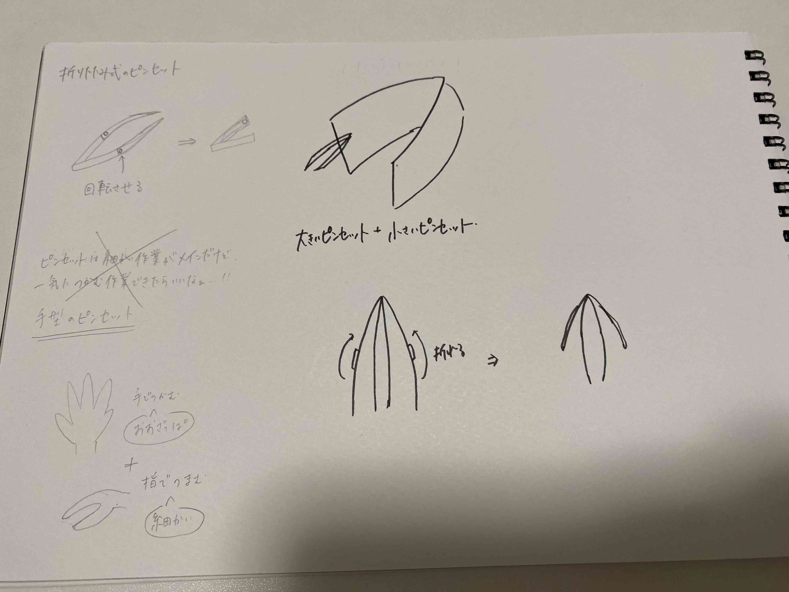
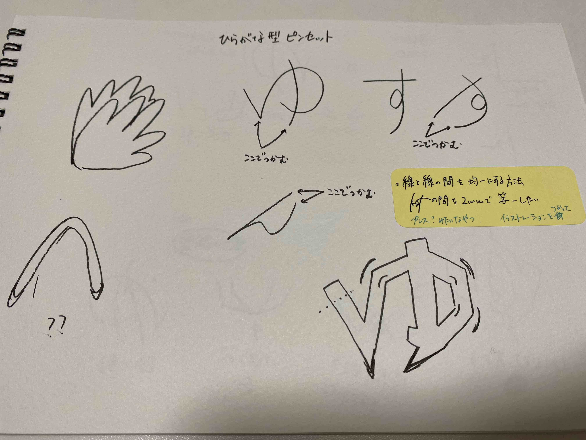
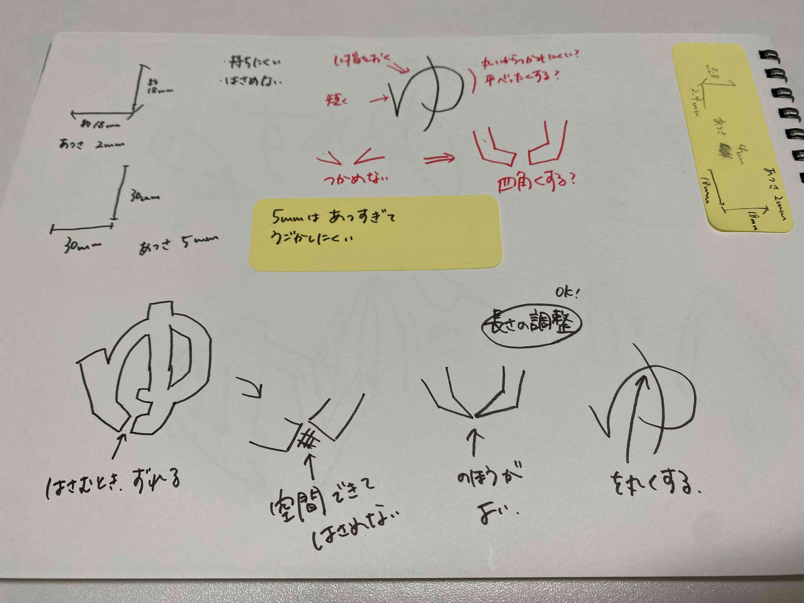
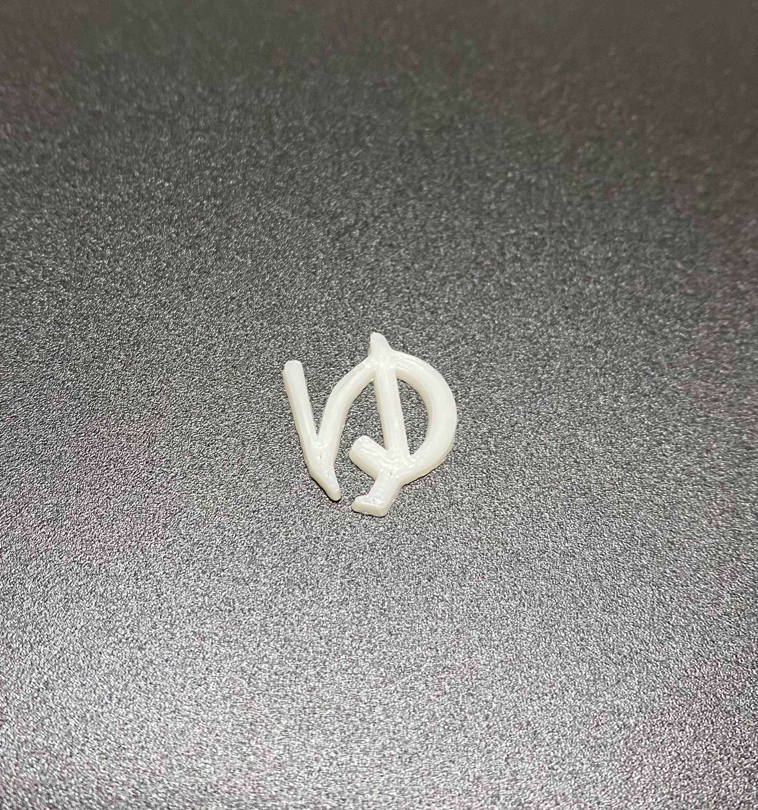
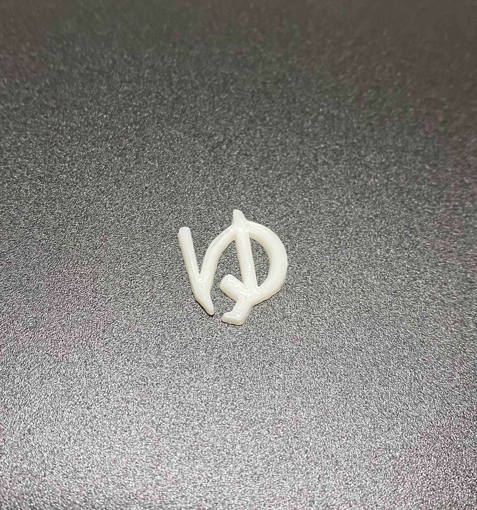
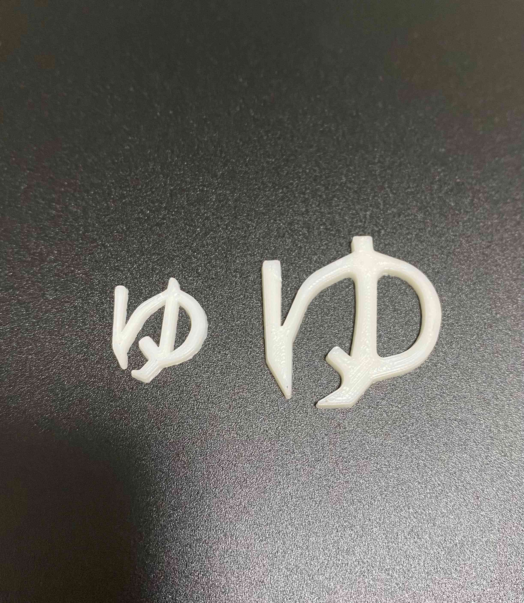
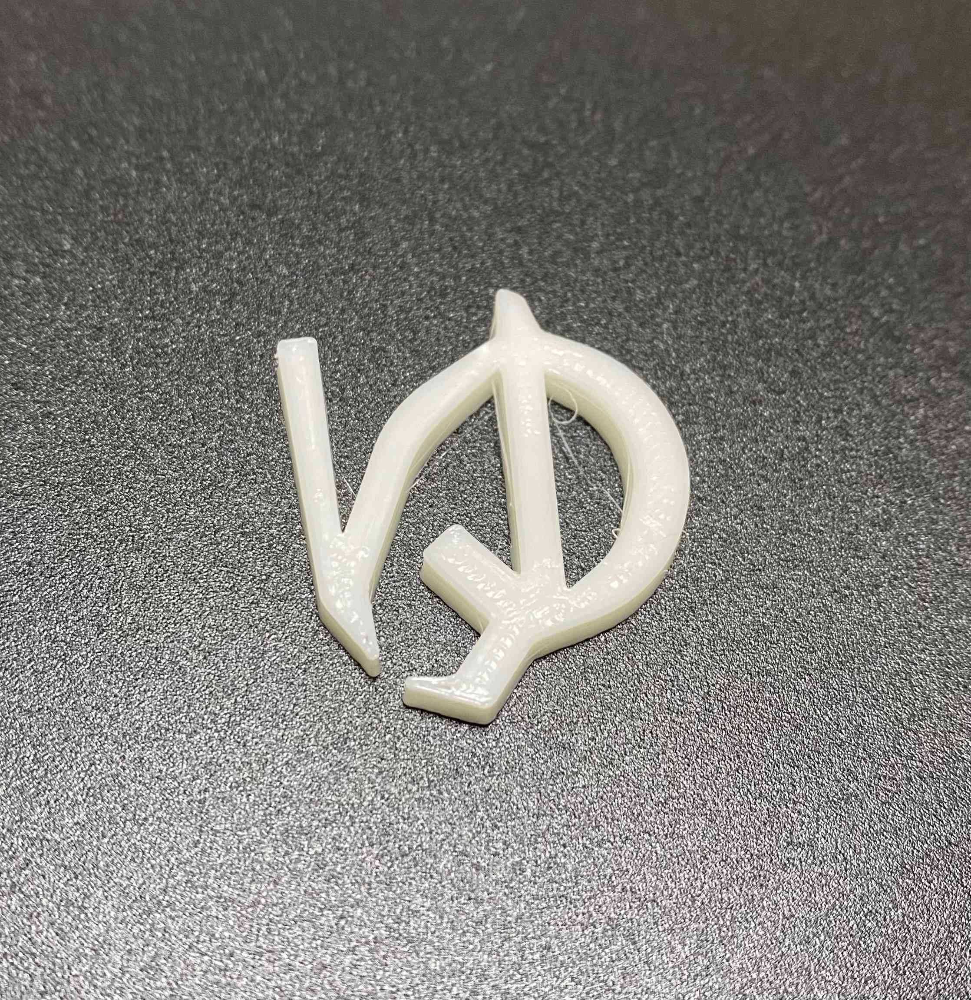
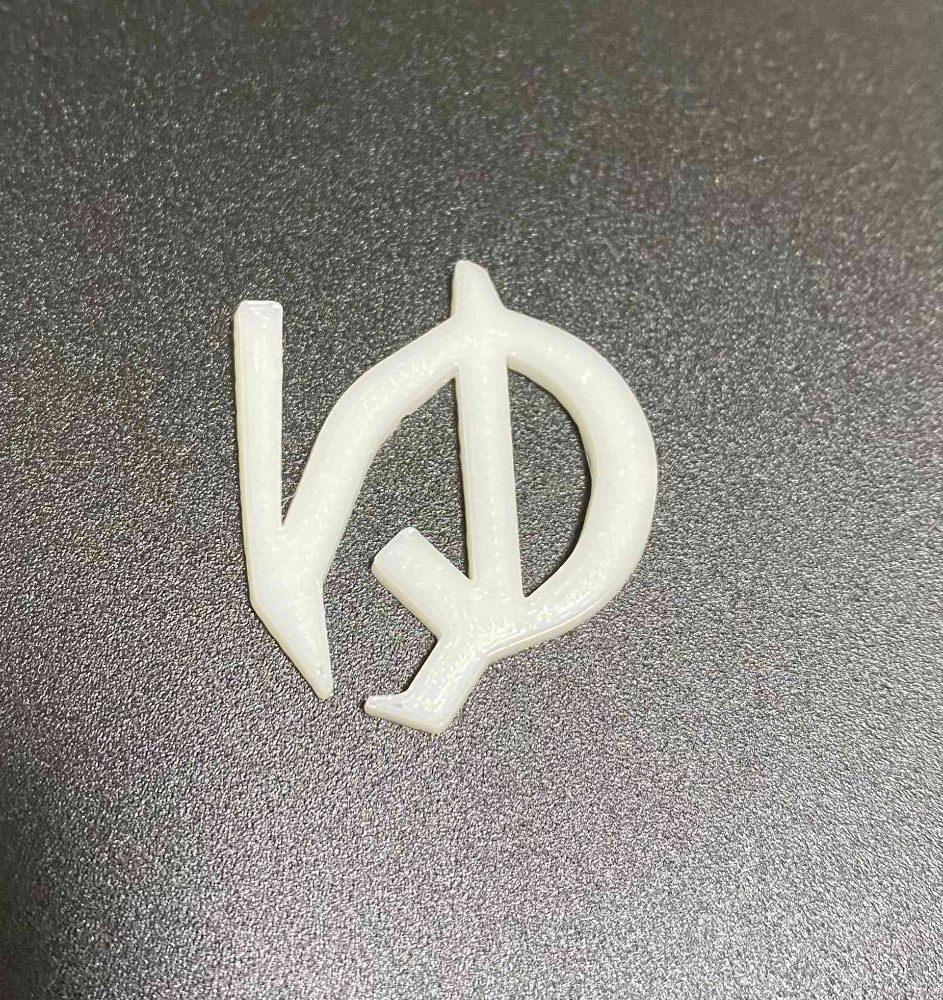
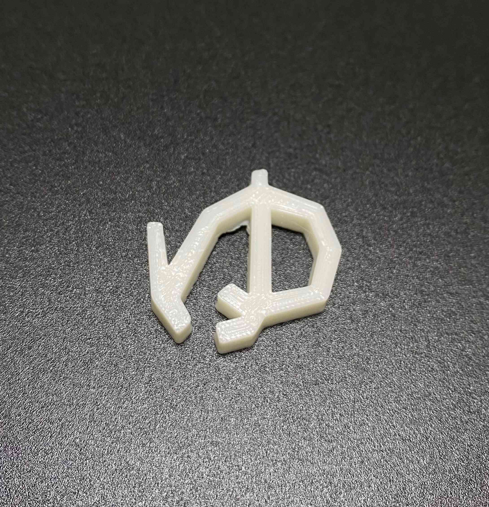
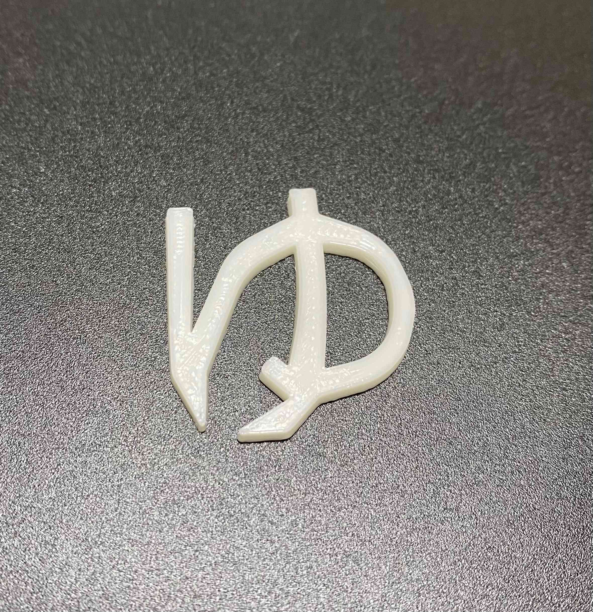

○○型のピンセット
作品タイトル：ひらがな型のピンセット
＜完成作品＞
 作品について：
作品について：ひらがなの「ゆ」の折り返している部分とはらいの部分でつかめるようにしました。
丸いところに指を入れて持ちます。
つかむところは細いので細かく小さい者をつかむことができます。
＜制作経緯＞
○○型のピンセットを作ろうと決めて「指型」「チューリップ型」、、、と書いて眺めていた時に、「ひらがなのはねとかはらいで挟めそうだな」と思い、作ってみようと思いました。＜スケッチ＞
  ＜制作プロセス＞
まず自分で書いてみました。
「ゆ」とよむことはできるけどイメージ通りにスケッチすることができませんでした。
友人から「画像を下に置くといいよ」と聞き、画像を参考にスケッチしてみました。

 
３Dプリンターで出力しました。
が、とんでもなく小さいものができてしまいました。
 （左：最初のモデル 右：完成作品） 大きさを変えてみました。
 大きくしてみるとつかむところがずれていることがわかったので修正しました。

丸いところが滑りやすく力を入れに気と感じました。
なので、かくかくさたバージョンも作ってみました。

なんかいまいちだなと思ったので、丸みがある「ゆ」を改良することにしました。
挟むところの可動域が狭かったので、広げました。
また、丸いところの指を入れられるように少し広げました。

しかし、まだ挟むときにかなりの力が必要になるのでどうしたらいいのか悩んでいました。
一緒に制作していた友人の作品を見て、「支点となる部分を丸くしたら挟みやすくなるのではないか」と思い改良しました。

丸くしたことと厚さを少し薄くしたことでそこまで力を入れずに挟めるようになりました。
＜感想＞
ひらがな型だったのでスケッチがしやすかったです。厚さを1ミリ変えるだけでもピンセットの動きがかなり変わり驚きました。
薄くすると動かしやすくはなるけど強度に心配がでたので厚さの調節は難しいなと感じました。
今回は人文字しか作らなかったけど他の文字もつくったら面白いなと思いました。